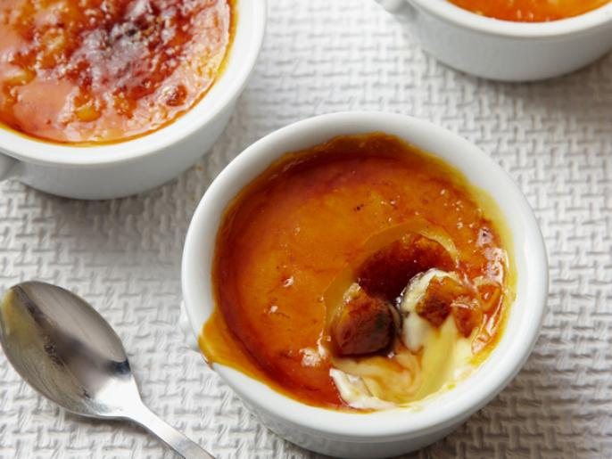

Creme Brulee

Ingredients
Ingredients
- 1 quart heavy cream
- 1 vanilla bea, split and scraped
- 1 cup vanilla sugar, divided
- 6 large egg yolks
- 2 quartz hot water
Instructions
This makes a large pan of Creme Brulee.
- Preheat the oven to 325 degrees F.
- Place the cream, vanilla bean and its pulp into a medium saucepan set over medium-high heat and bring to a boil.
- Remove from the heat, cover and allow to sit for 15 minutes.
- Remove the vanilla bean and reserve for another use.
- In a medium bowl, whisk together 1/2 cup sugar and the egg yolks until well blended and it just starts to lighten in color.
- Add the cream a little at a time, stirring continually.
- Pour the liquid into 6 (7 to 8-ounce) ramekins.
- Place the ramekins into a large cake pan or roasting pan.
- Pour enough hot water into the pan to come halfway up the sides of the ramekins.
- Bake just until the creme brulee is set, but still trembling in the center, approximately 40 to 45 minutes.
- Remove the ramekins from the roasting pan and refrigerate for at least 2 hours and up to 3 days.
- Remove the creme brulee from the refrigerator for at least 30 minutes prior to browning the sugar on top.
- Divide the remaining 1/2 cup vanilla sugar equally among the 6 dishes and spread evenly on top.
- Using a torch, melt the sugar and form a crispy top.
- Allow the creme brulee to sit for at least 5 minutes before serving.